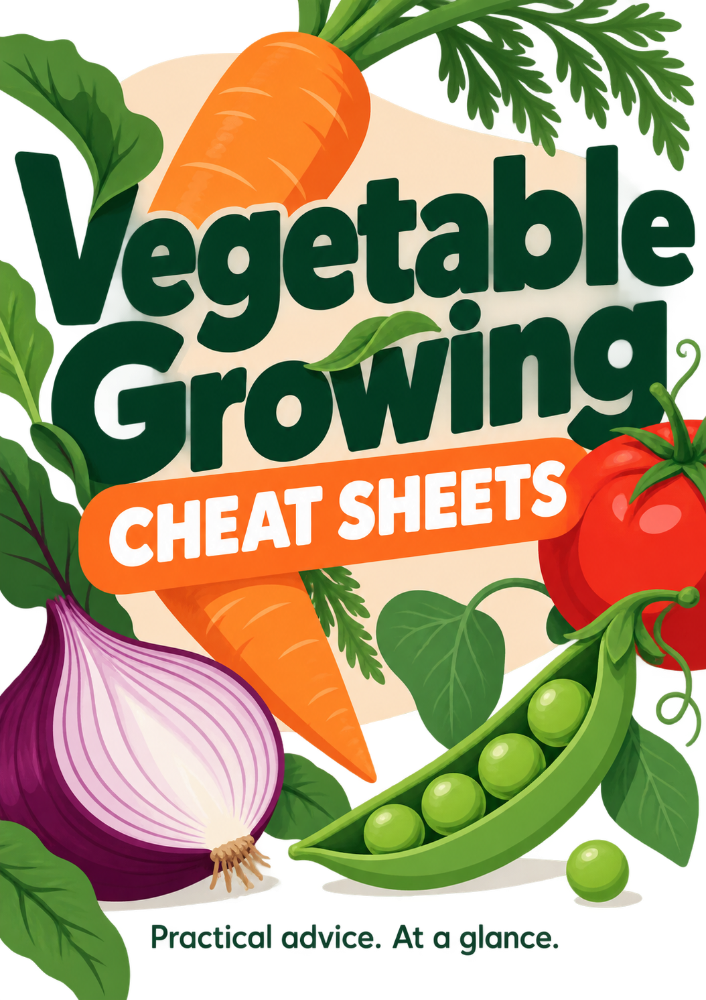
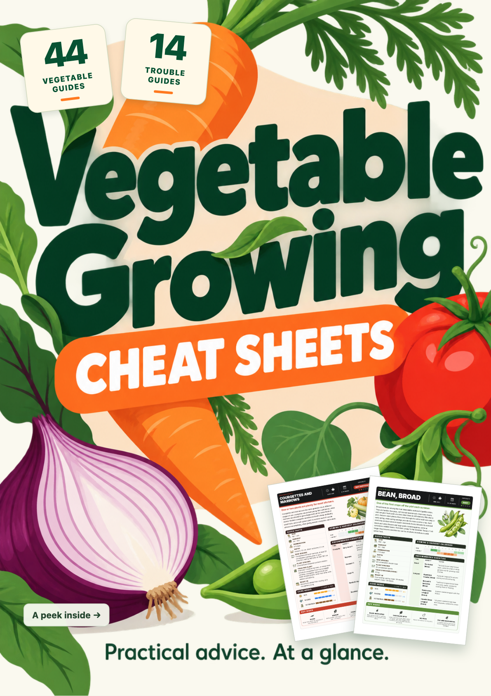

C · Original
The preferred illustration, bright colours and large title. Kept here to judge how much the new elements change its feel.


C is the preferred direction. The sheet previews stay. The approved “44 vegetable guides” badge is now joined by “14 trouble guides”, with the original light background and no footer.
The preferred illustration, bright colours and large title. Kept here to judge how much the new elements change its feel.

Matching “44 vegetable guides” and “14 trouble guides” badges balance the real sheet previews at the opposite corner.
